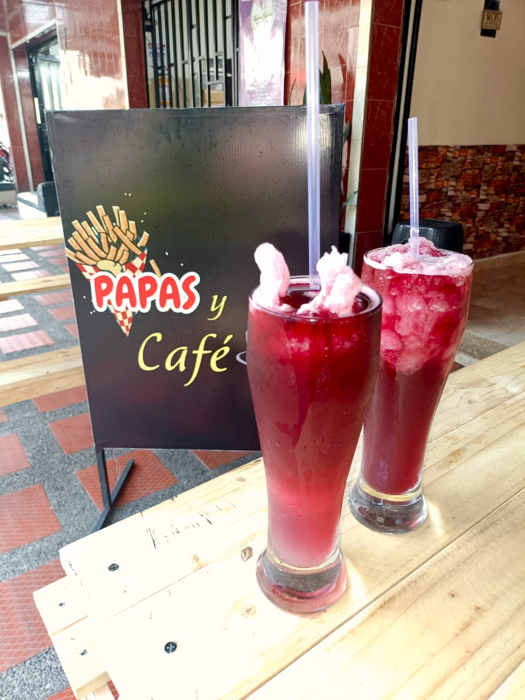
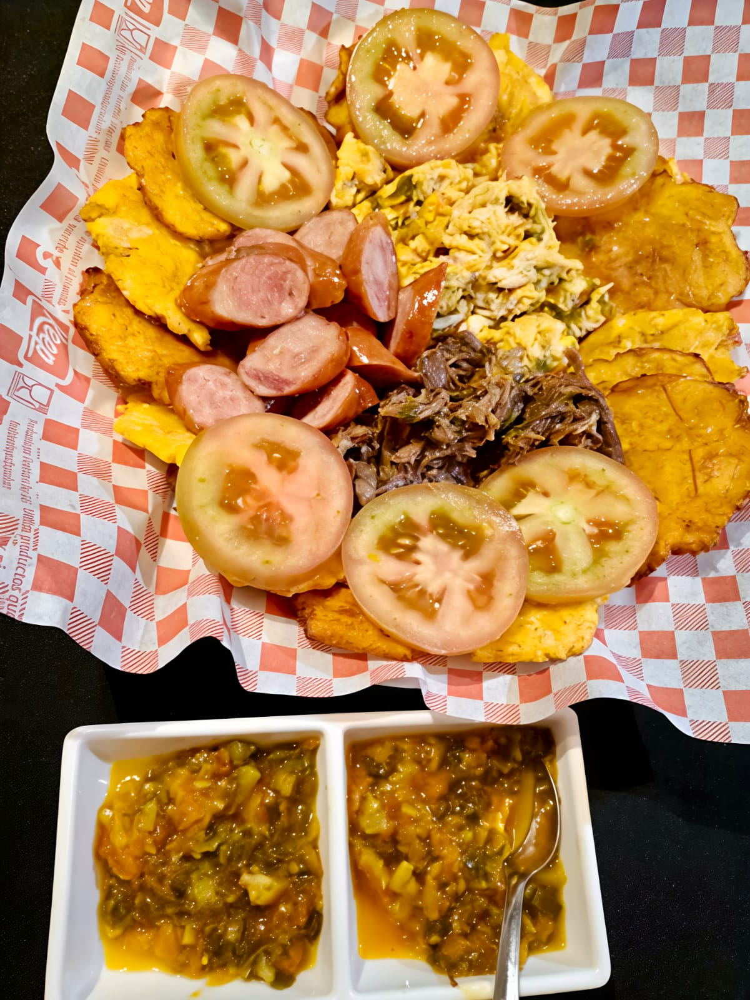
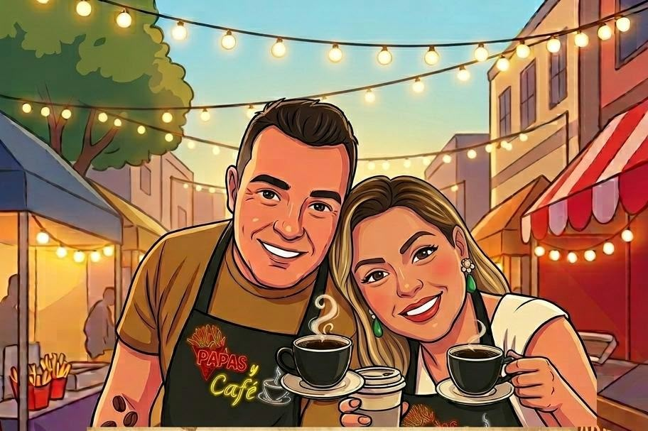

LA ESPECIALIDAD DE LA CASA
CARNE.
¡CARNE!
Hay empanadas. Y están las nuestras: doraditas, llenas de carne y listas para resolver ese antojo.
Tu próximo plan en Ciudad Boquía, Pereira.
POQUITO CUENTO. MUCHO RELLENO.
LAS CONSENTIDAS DE LA CASA
POR FUERA,
DORADITAS.
POR DENTRO,
¡CARNE!
Ahora sí, míralas de cerca. Nuestras empanadas son la especialidad por una buena razón: aquí el relleno habla por sí solo.
UN VISTAZO A PAPAS Y CAFÉ
EL SABOR SE VE.
EL PLAN SE VIVE.
Unas fotos para abrir el apetito. El resto del plan te espera aquí.




DETRÁS DE CADA ANTOJO
HAY PERSONAS.
Y MUCHO CORAZÓN.
Somos quienes te reciben en Papas y Café. Un negocio familiar en Ciudad Boquía con una idea sencilla: que comer rico también sea pasarla bueno.
Nos gustan las empanadas bien rellenas, las mesas con buena compañía y esos planes que empiezan con un “¿y si vamos por algo?”.
DEL BARRIO A TU FEED
EL SABOR
TAMBIÉN
SE SIGUE.
Encuéntranos en TikTok e Instagram.
Y deja tu próximo antojo a un toque.
DEL “SE ME ANTOJÓ” AL “YA VOY”
NOS VEMOS
EN BOQUÍA.
Ven con hambre. Ven con tu parche.
Del resto nos encargamos nosotros.
AQUÍ ES EL PLAN
Parque Industrial · Ciudad Boquía, Pereira
Mz. 12, casa 18, local 2
HORA DE ANTOJARSE
5:00 p. m. a 10:30 p. m.
Consulta los días de atención por WhatsApp.